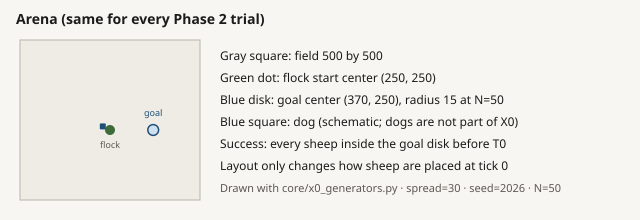
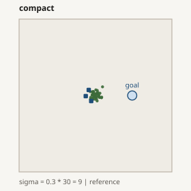
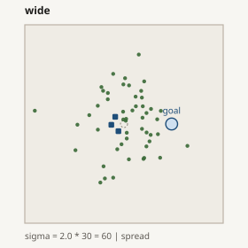
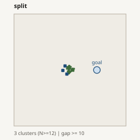
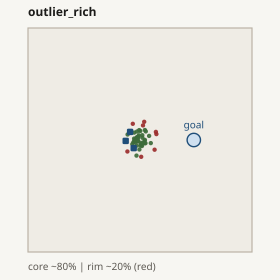
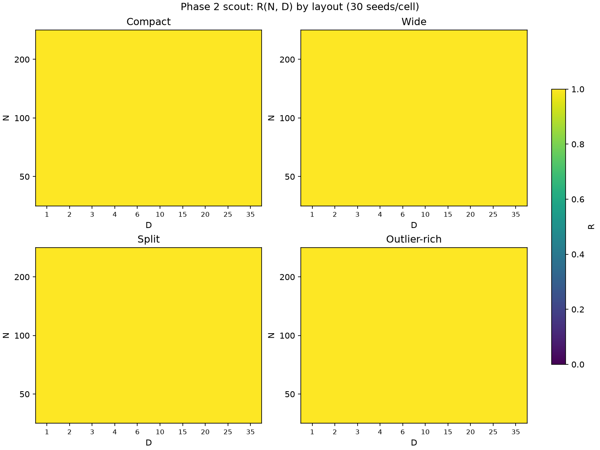
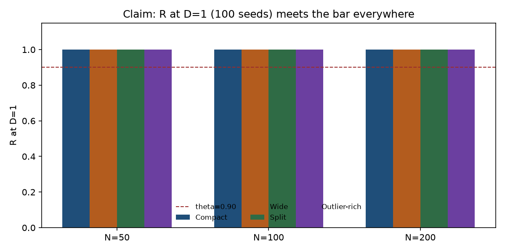
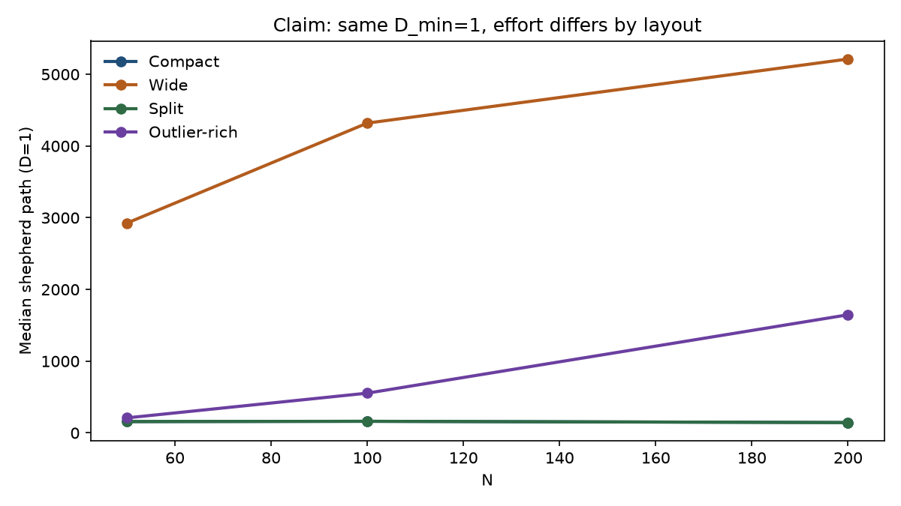
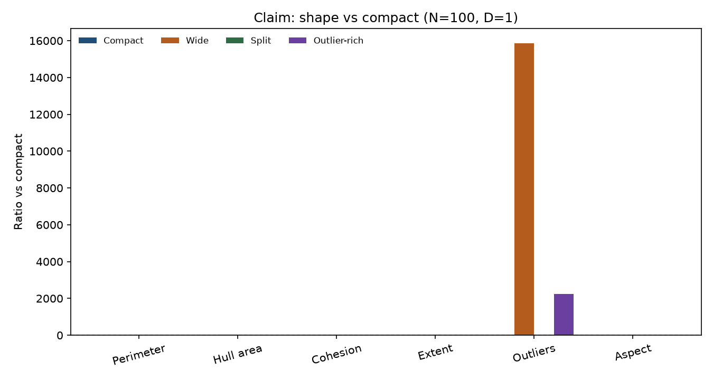
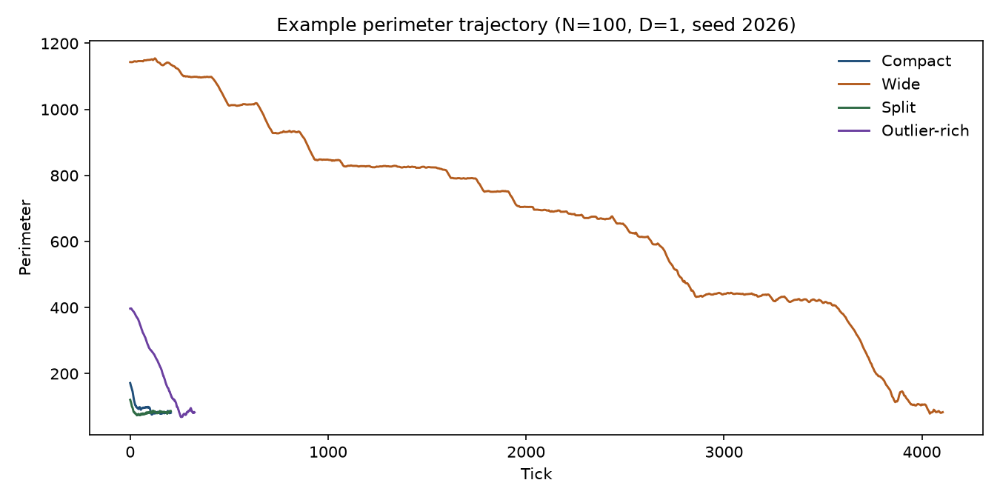

Package home · Vietnamese report
Phase 2 structure map
Baseline structure contrast for HerdSim (protocol scaling_v2): at fixed flock size N, does initial layout X0 change the dogs needed for reliable herding? Read top to bottom: summary -> question -> design -> how we ran it -> results -> what it means.
SUMMARY At a glance
| Field | Value |
|---|---|
| Dog method | strombom_multi |
| Layouts X0 | compact, wide, split, outlier_rich |
| Flock sizes N | 50, 100, 200 (claim grid; smoke also used 5, 10, 25) |
| Dog counts D | 1, 2, 3, 4, 6, 10, 15, 20, 25, 35 |
| Reliability threshold | R >= 0.90 |
| Arena / goal | Same as Phase 1: 500 x 500; goal (370, 250); radius 15 * sqrt(N/50) |
| Sampling | Smoke 5 seeds; scout 30; claim 100 on D = 1 and 2 windows |
| Cited dataset | Claim merge: 5,280 rows (24 cells at 100 seeds + 96 cells at 30) |
| Metrics logged | cohesion, spread, extent, perimeter, hull_area, flock_density, aspect_ratio, fragmentation, outliers, i_dir, coverage (+ timeseries parquet) |

QUESTION What Phase 2 asks
Research question (structure / RQ1, Package B): at the same flock size N, does a different initial layout X0 change D_min for reliable herding (R >= 0.90)?
- C1a: for at least one N, D_min differs by at least one dog-grid step across layouts.
- C1b: an early-state model predicts success better than (N, D) alone (leave-one-N-out).
Phase 1 already showed D_min = 1 on compact for these N. Phase 2 asks whether other layouts push that floor up. Method transfer is Phase 4.
DESIGN What we froze
| Choice | Value | One-line why |
|---|---|---|
| N for claim | 50, 100, 200 | Large enough for split/outliers; same compact D_min floor as Phase 1. |
| Layouts | 4 families | Layout contract: compact reference + wide / split / outlier contrasts. |
| D grid | same as Phase 1 | C1a is measured in the same dog-grid steps as the size map. |
| Method | strombom_multi only | RQ1 baseline; kubo/fat are Phase 4. |
| Seeds | 30 then 100 | Full scout map, then precise D_min window (here D = 1 and next grid D = 2). |
Full layout-parameter rationale (sigma, gaps, outlier fraction) is in the Appendix.
DESIGN Four layouts (pictures)





RUN How we ran it
- Smoke (phase2_pilot_state): 600 trials, ~7 min. Pipeline + four X0 generators.
- Scout: 3 N x 4 layouts x 10 D x 30 seeds = 3,600 trials, ~3.2 h. Full R map.
- Claim plan: 24 boundary cells (D = 1 and 2 for every layout x N).
- Claim reseed: 24 x 100 = 2,400 trials, ~3.0 h (slow tail on wide N = 200).
- Merge + Package B: 5,280 rows; frontiers and predictor comparison exported.
1. Smoke: 600 trials (~7 min)
N in {5,10,25,50,100}, D in {1..10}, 5 seeds, all four layouts. Complete. Not cited for C1a.
2. Scout: 3,600 trials (~3.2 h)
Every scout cell had R = 1.0. That already suggested D_min = 1 for all layouts.

3–4. Claim: 24 cells x 100 seeds = 2,400 (~3.0 h)
Window = D_min candidate and the next grid D. With scout D_min = 1, that is D = 1 and 2. Claim R at D = 1 is still 1.0 on all 12 (layout, N) pairs. Bootstrap CI on D_min is [1, 1] everywhere.

RESULTS Results
| Stage | Trials | Elapsed | Cite science? |
|---|---|---|---|
| Smoke | 600 | ~7 min | No |
| Scout | 3,600 | ~3.2 h | No (planning) |
| Claim reseed | 2,400 | ~3.0 h | Yes (with merge) |
| Merged map | 5,280 | - | Yes |
D_min by layout (claim / Package B)
| N | compact | wide | split | outlier_rich | Gap >= 1 step? |
|---|---|---|---|---|---|
| 50 | 1 | 1 | 1 | 1 | No |
| 100 | 1 | 1 | 1 | 1 | No |
| 200 | 1 | 1 | 1 | 1 | No |

Same D_min, different effort and time (claim, D = 1)
Median shepherd path / median ticks at D = 1, 100 seeds:
| N | metric | compact | split | outlier_rich | wide |
|---|---|---|---|---|---|
| 50 | path | 158 | 158 | 209 | 2,925 |
| 100 | path | 161 | 162 | 554 | 4,320 |
| 200 | path | 144 | 144 | 1,647 | 5,213 |
| 100 | ticks (mean) | 204 | 205 | 518 | 3,167 |


Wide is roughly 25–35x the compact path at N = 100, and finishes much later, but still before timeout with R = 1. Split stays almost identical to compact on this controller.
RESULTS Metrics logged (including perimeter)
Every trial writes mean / min / max / auc columns on trials.csv. With store_timeseries: true, parquet histories also store per-tick perimeter, hull_area, and the rest. The runner always attaches the full metric registry (Phases 2+ use the same path; some Phase 5 protocols only skip parquet to save disk).
| Group | Metrics |
|---|---|
| Cohesion / spread | cohesion, mean_spread, extent |
| Hull shape | perimeter, hull_area, flock_density, aspect_ratio |
| Structure | fragmentation, outlier_count |
| Dogs | i_dir, coverage |
| Task | success, shepherd_path, total_ticks |
Claim means at N = 100, D = 1 (100 seeds)
| Metric | compact | split | outlier_rich | wide |
|---|---|---|---|---|
| Perimeter | 86 | 84 | 171 | 549 |
| Hull area | 486 | 458 | 2,304 | 22,765 |
| Cohesion | 6.8 | 7.0 | 8.5 | 27.9 |
| Fragmentation | 0.99 | 0.99 | 0.92 | 0.65 |
| Outlier count | ~0 | 0 | 3.3 | 23.2 |
| Flock density | 0.22 | 0.22 | 0.13 | 0.04 |
| Aspect ratio | 1.46 | 1.45 | 1.61 | 1.63 |
| Coverage | 1.00 | 1.00 | 0.91 | 0.34 |



INTERPRETATION What it means
- Reliability question: on this protocol, layout does not force extra dogs. One dog already clears theta for all four starts at these N.
- Cost / difficulty question: layout still matters. Wide (and to a lesser degree outlier-rich) costs far more path and time, and the flock state stays more spread (perimeter, hull, outliers).
- Split ≈ compact here for Strombom on D_min, path, and most shape means: the controller appears to reassemble clusters without needing a second dog.
- Vs Phase 1: Phase 1 said compact D_min is flat at 1 for N >= 25. Phase 2 says that floor is not layout-specific on {50,100,200} for this method.
CLAIMS Claims C1a / C1b
| Claim | Rule | Verdict on this map |
|---|---|---|
| C1a | At least one N has a D_min gap of >= 1 dog-grid step across X0 at theta 0.90 | Not supported (all D_min = 1; bootstrap CI [1,1]) |
| C1b | State model has lower out-of-sample NLL than (N, D), leave-one-N-out | Cannot evaluate (Package B note: need both success and failure outcomes; every cell succeeds) |
Rejecting C1a on D_min is not the same as saying layout is irrelevant. It means the dog-count frontier does not move; effort and shape still do.
LIMITS What this run does not support
- Only strombom_multi. Other methods are Phase 4.
- Only drive-to-goal on the 500 field. Not a pen/gate task, NetLogo, or a real farm.
- N = 300 / 400 were not run; optional after this map (all layouts already on D_min = 1).
- C1b stays unevaluable until there are failure cells for the state predictor.
NEXT Next steps
- Phase 4 transfer (kubo / fat): does the flat D_min + effort-by-layout pattern transfer?
- Do not raise N only to hunt a D_min gap unless a new hypothesis needs it.
- Shape metrics (perimeter, hull, …) are ready for mechanism work if a later method shows overcrowding.
APPENDIX Why these values
- N = {50,100,200}: split uses 3 clusters for N >= 12; outlier ~20% needs more than a handful of sheep; compact D_min already 1 from Phase 1.
- Not N = 5,10 for claim: tiny-flock regime and 2-cluster split rule; smoke may use them.
- Compact sigma = 9, spread = 30; wide sigma = 60: clear cohesion gap that still fits the field.
- Split gap >= 10; measurement radius = 5: clusters stay separate under the fragmentation metric.
- Outliers ~20% beyond r_a N^(2/3): a rim, not a second flock (50%) or a single sheep (5% at small N).
APPENDIX Raw data
| Path | What |
|---|---|
| scaling/results/phase2/pilot_state/ | Smoke 600 |
| scaling/results/phase2/scout/ | Scout 3,600 + timeseries |
| scaling/results/phase2/claim/ | Claim 2,400, merge 5,280, Package B |
| assets/claim/packages/b/ | frontier_by_layout.csv, predictor_comparison.csv |
| assets/figures/ | PNGs used above |
make -C scaling scaling-analyse PROTOCOL=phase2_claim PACKAGE=B